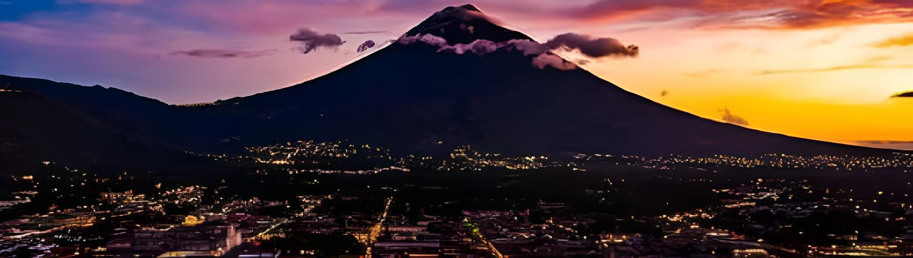
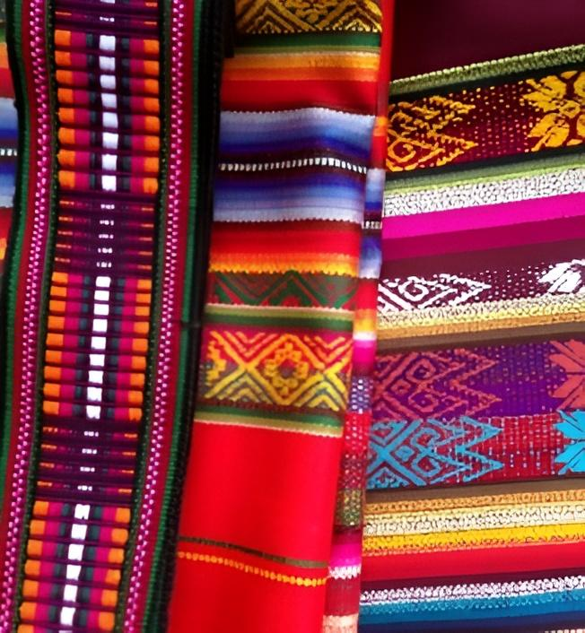
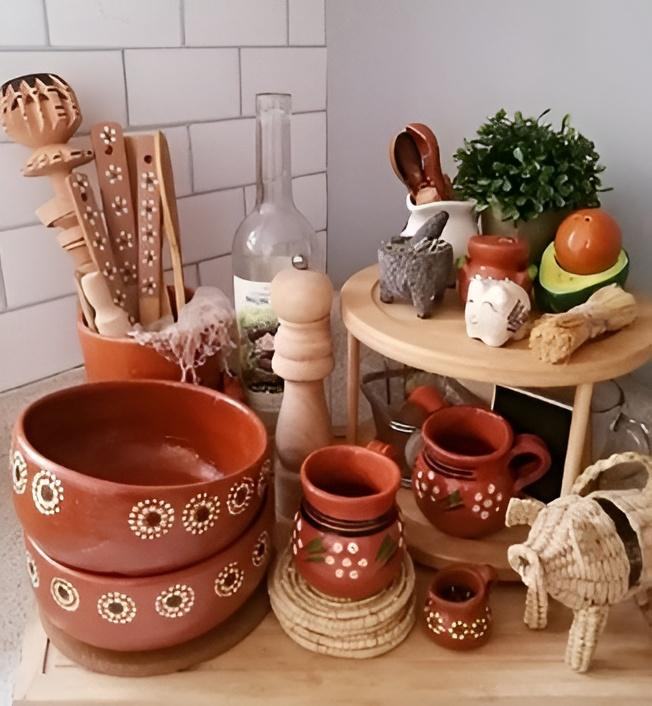
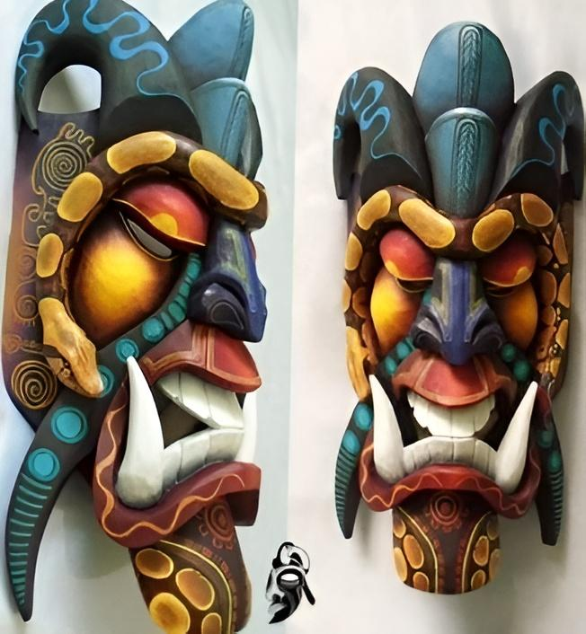

Guatemala
Guatemala es un país donde el pasado y el presente se fusionan en cada rincón. Sus artesanías, creadas con técnicas ancestrales, son un testimonio vivo de esta riqueza cultural. Los tejidos de telar, con sus diseños geométricos y símbolos llenos de significado, son una verdadera obra de arte. Cada objeto, desde un pequeño colgante de jade hasta un elaborado tocado de plumas, tiene una historia que contar. Guatemala es un paraíso para los amantes de las artesanías, donde podrás encontrar piezas únicas y conocer a los artesanos que las crean.
Artículos
Textiles mayas
Los textiles mayas son una verdadera obra de arte, creados con técnicas ancestrales transmitidas de generación en generación. Utilizan una amplia gama de tintes naturales obtenidos de plantas y minerales.
Se utilizan diferentes técnicas de tejido, como el telar de cintura y el de pedal. Cada diseño y color tiene un significado específico, relacionado con la naturaleza, la espiritualidad y la identidad maya.
Nombre: Francisco López
Correo electrónico: francisco.lopez.textiles_mayas@gmail.com
Cerámica de barro
La cerámica de barro es otra expresión artística de gran importancia en Guatemala. Se utiliza arcilla de diferentes colores y texturas, con ello se elaboran piezas utilitarias como ollas, jarros y cántaros, así como figuras decorativas.
La cerámica se cuece en hornos tradicionales, lo que le confiere una textura y color característicos. Cada región tiene su estilo propio, con formas y decoraciones únicas.
Nombre: Gabriela Arjona
Correo electrónico: gabriela.arjona.ceram_barro@gmail.com
Mascaras
Las máscaras tradicionales guatemaltecas han estados presentes en su cultura desde tiempos inmemoriales, son piezas llenas de simbolismo y espiritualidad. Estas máscaras no tienen únicamente la función de cubrir el rostro, sino que son un elemento transformador su porteador. Se suele utilizar madera, cuero, tela y otros materiales.
Se adornan con plumas, conchas, semillas y otros elementos naturales. También se utilizan en ceremonias y rituales para conectar con el mundo espiritual.
Nombre: Julia Rodríguez
Correo electrónico: julia.rodriguez.arte_máscaras@gmail.com